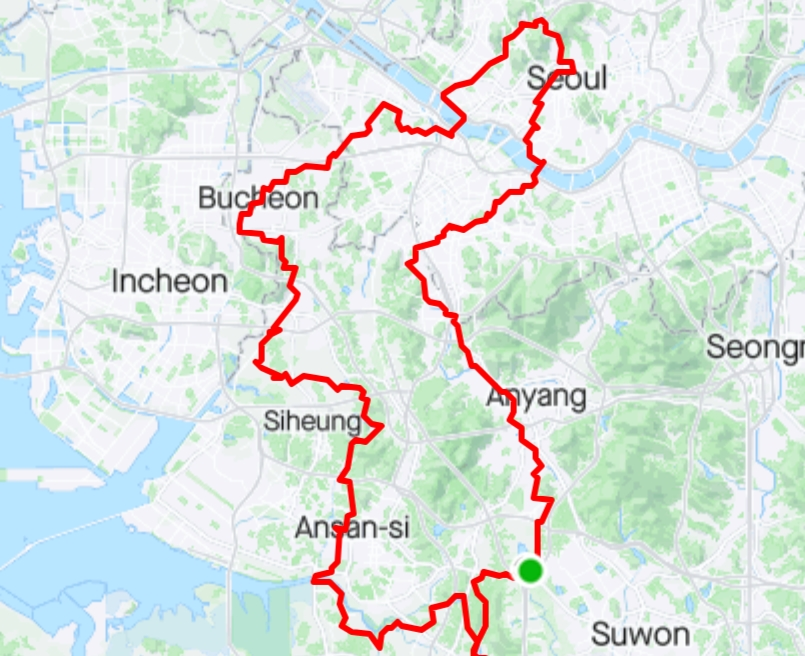
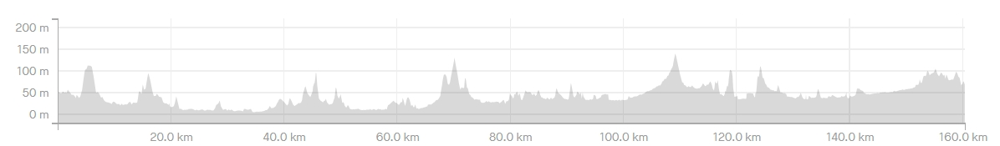

| 코스명 | 한반도(시즌2) |
| 코 스 | 왕송호수(시작)-송라리저수지-비봉습지공원(화성)-반월천자전거길(안산)-화정천자전거길-안산면허시험장-물왕저수지-포동생활체육공원-신천역(시흥)-송내역(부천)-백만송이장미공원-신월사거리-화곡역-월촌초등학교(목동)-양평교-양화대교-홍제천자전거길-창의문-청와대-광화문-충정로4거리-용산성당(효창동)-한강자전거길-한강대교-고구동산(상도동)-장승배기역-보라매공원-도림천자전거길-철산교-기아자동차(소하리)-기아대교-안양천자전거길-의왕ICD-부곡체육공원-왕송호수(복귀) |
| 거 리 | 160km (고도 1,665m) |
| 시 간 | 8시간 41분 (총 걸린시간 12시간) |
| GPX 파일 | 한반도 시즌2 GPX 다운로드 |


드디어 벼르고 벼르던 한반도 코스를 돌기로 하였다.
준비하는 과정에서는 설레는 마음으로 한반도 시즌1 코스가 로드로는 도로의 상태가 좋지 않다는 이야기가 있어 한반도 시즌2로 가기로 하고 준비를 하였다.
코스는 왕송호수에서 시작하여 왕송호수로 시작하는 코스로 잡고 라이딩을 시작하였다.
시작은 순조로웠으나 지도파일이 호환이 안되서 그런지 가끔가끔 지도가 없어지는 형상이 발생하여 처음부터 길을 잃고 시간을 허비하고 겨우 겨우 안산을 지나서 시흥에 접어들 수 있었다.
가끔가끔은 길의 안내가 순조롭지 못하여 순간의 판단 만으로 자전거를 들고 계단을 올라가는 경우도 발생을 하였으며, 부천에 들어서자 겨우 겨우 아는 길이 나오면서 제대로 코스를 라이딩 할 수 있었다.
서울에 진입하면서 강서구청 및 목동을 지나 양화대교를 넘으면서 어느덧 오후 2시를 넘어 복귀시 야간라이딩이 걱정될 정도로 시간이 지체되어 되도록이면 빠르게 홍제천길을 거쳐 창의문, 청와대, 광화문을 지날 수 있었다. 물론 가는 길마다 많은 업힐을 지나갔으며 경로에서 지나는 동네의 업힐 코스는 무조건 지나는 코스로 매우 힘든 라이딩을 하였음은 물론이다.
용산을 지나서 한강자전거길에 접어드니 이제 업힐이 거의 끝난 것 같아 안도의 한숨을 내쉬고 한강대교를 넘어갔다. 한강대교의 진입로가 공사중이라 반대쪽 진입로를 우회하여 한강대교를 넘었으며, 한강대교를 지나 상도터널 방향으로 가는데 갑자기 네비게이션이 왼쪽 골목으로 올라가라는 신호를 보냈다. 아무생각없이 10~20m쯤 갔을까 그렇지 않아도 100킬로 이상 라이딩을 한 상태라 힘이 빠진 상태인데 상도동을 업힐로 넘어가라니 속으로는 지도를 만든 사람에게 불평불만을 토로 하면서도 이제까지의 과정이 아까워 꾸역꾸역 상도동 고개를 넘어 보라매 공원 쪽으로 내달렸다.
이제나 저제나 안양천 자전거길이 나오기만을 기다렸는데 무심하게도 디지털로를 거쳐 철산교 광명을 거쳐 소하리 기아자동차 공장을 지나 겨우 겨우 안양천 자전거길로 접어들 수 있었다.
이제 온몸의 남은 힘도 없고 길도 어둡기 시작하였지만 있는 힘을 끌어 모아 야간라이딩 모드로 겨우 겨우 목적지에 도착 할 수 있었다.
혼자 160km를 라이딩해서 그런지 이제까지 하루 라이딩중 가장 긴 거리이기도 하지만 나와의 싸움에서 심리적으로나 체력적으로 너무 힘든 라이딩 이었다.
더군다나 업힐 코스가 너무 많고 가끔 가끔 길도 순탄치 않아 남들에게는 추천하고 싶지는 않은 코스이지만 그래도 해 냈다는 성취감은 몸은 만신창이가 되었지만 매우 보람된 라이딩 이었다.